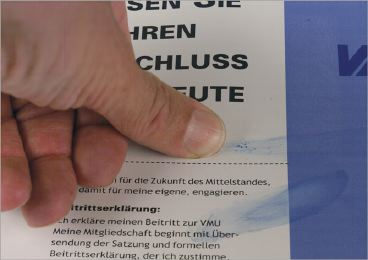
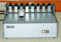
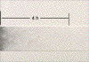

TROCKNUNGSVERZÖGERUNGEN
|
Bei Trocknungsverzögerungen handelt es
sich um einen deutlich verlangsamten Ablauf der
Druckfarbentrocknung im Stapel beim
Bogenoffsetdruck oder auch bei Rollenoffsetdrucken.
In der Folge führt dies zu Farbabrieb der
Drucke beim Transport oder bei der
Druckweiterverarbeitung (Abb. 1).
|

|
Abb. 1: Farbabrieb bei gestrichenem Papier, 3 Tage
nach dem Druck, aufgrund von
Trocknungsverzögerungen.
|
|
|
|
Mögliche Ursachen:
|
|

|
|
Abb. 2: Trockenzeitprüfgerät der Fa.
prüfbau.
|
|
|
|

|
|
Abb. 3: Abbildung des Konterstreifens des
Trockenzeittests.
|
|
|
|
|
|
|
|
|
|
|
|
|
|
|
|

|
|
|
|
|
|

|
|
|
|
|
|

|
|
|
|
|
|

|
|
|
|
|
|
|
Trocknungsverzögerungen sind meist auf Wechselwirkungen
zwischen Druckfarbe, Zusatzstoffen und Feuchtmittel
zurückzuführen.
Der pH-Wert des Feuchtmittels spielt dabei eine große
Rolle. Sinkt der pH-Wert des Feuchtmittels unter 4,5 ist mit
Trocknungsverzögerungen zu rechnen.
Werden Zusatzstoffe der Druckfarbe, insbesondere
Trockenstoffe, nicht im richtigen Maß dosiert,
können Trocknungsverzögerungen auftreten.
Die Stapeltemperatur hat einen generellen Einfluss auf die
Trockenzeit. Bei zu niedriger Stapeltemperatur resultieren
Trocknungsverzögerungen.
Das Emulgieren der Druckfarbe mit Feuchtmittel beeinflusst
die Trockenzeit. Bei übermäßig emulgierter
Druckfarbe resultieren Trocknungsverzögerungen.
Weiterhin haben natürlich die Materialparameter
Druckfarbe und Bedruckstoff einen entscheidenden Einfluss
auf die Druckfarbentrocknung. Im Vergleich von mehreren
Druckfarbentypen oder Papieren bzw. Kartons können sich
die Trocknungszeiten wesentlich unterscheiden.
Die früher existierende Meinung, dass Papiere mit hohem
Säuregehalt zu Trocknungsverzögerungen
führen, trifft heutzutage nicht mehr zu. In der
modernen Papierherstellung werden die Papiere
überwiegend im neutralen Bereich hergestellt, weil
zunehmend Calciumcarbonat als günstiger Füllstoff
oder Streichpigment eingesetzt wird. Der Einsatz von
CaCO3 ist erst im neutralen Bereich möglich,
da es bei saurem pH-Wert zerfällt und dabei
CO2 (Schaumbildung) entsteht.
Im Rollenoffset kann eine Fehleinstellung der
Heißlufttrocknung, also zu niedrige Temperatur, oder
zu kurze Verweilzeit des Papiers in der Trocknungsstrecke
mangelnde Druckfarbentrocknung und somit
Trocknungsverzögerungen hervorrufen.
Die Farbschichtdicke hat einen weiteren Einfluss auf die
Druckfarbentrocknung. Je höher die Farbschichtdicke
ist, desto langsamer verläuft die Trocknung.
|
Mögliche Abhilfen:
|
|
Grundsätzlich ist, um Trocknungsverzögerungen zu
vermeiden, eine optimale Abstimmung der Kombination:
Druckfarbe/Papier dringende Voraussetzung. Dies kann am
besten in einem Druckversuch oder im Labor erfolgen. Auf
diese Art können gut verträgliche Kombinationen
ausgetestet und für zukünftige Aufträge
eingesetzt werden. Der Einsatz einer
„Standarddruckfarbe“ für alle Papiersorten
wäre zwar wünschenswert, Praxisergebnisse beweisen
allerdings immer wieder, dass dies nicht realistisch
ist.
Sofern der Drucker Einfluss auf die Wahl des Papiers hat,
sollten Papiere mit gutem Trocknungsverhalten Einsatz
finden.
Ebenso sollten Druckfarben mit gutem Trocknungsverhalten
verwendet werden.
Der pH-Wert des Feuchtmittels sollte nicht <4,5 sein.
Zusatzstoffe müssen in der vom Hersteller angegebenen
Dosierung angesetzt werden.
Beim Bedrucken von Spezialpapieren (z. B. Transparentpapiere
oder Folien) ist es ratsam, sich in Gesprächen mit dem
Druckfarbenhersteller eine günstige Kombination aus
Druckfarbe, Zusatzstoffe und Feuchtmittel empfehlen zu
lassen.
Übermäßiges Emulgieren der Druckfarbe sollte
durch optimale Einstellung des
Druckfarbe/Feuchtmittel-Gleichgewichts vermieden werden. Bei
geringer Farbabnahme empfehlen sich Farbabnahmestreifen am
Rand der Druckform.
Wenn vorhanden, sollte im Bogenoffset mit IR-Trocknung
gedruckt werden. Die IR-Trocknung bewirkt eine
Viskositätsverminderung der Mineralöle und dadurch
ein verbessertes Wegschlagen der Öle in die
Papieroberfläche.
Im Rollenoffset ist auf eine korrekte Einstellung der
Heißlufttrocknung zu achten, damit die Mineralöle
in der Druckfarbe in ausreichendem Maß verdampft
werden können (physikalische Trocknung). Es ist aber
dringend darauf zu achten, dass die Temperatur im Trockner
nicht zu hoch ist, da sonst andere Probleme, wie
Falzbrechen, Blasenbildung oder Faseraufrauung
auftreten.
Speziell bei ungestrichenen Papieren (z. B. SC-Papiere) hat
die Verweilzeit der Papierbahn in der Trockenstrecke einen
wesentlichen Einfluss auf die Druckfarbentrocknung. Im
Vergleich zu gestrichenen Papieren haben ungestrichene
Papiere einen wesentlich höheren Farbbedarf. Es
befindet sich also mehr Druckfarbe auf dem Papier. Um in
diesem Fall die Druckfarbe ausreichend trocknen zu
können, hilft meist nur die Verweilzeit des Papiers in
der Trockenstrecke zu verlängern, also die
Druckgeschwindigkeit zu reduzieren.
Weiterhin ist im Rollenoffset die Temperatur auf den
Kühlwalzen von Bedeutung. Die Abkühlung stellt im
Rollenoffset den 3. Schritt der Druckfarbentrocknung dar und
dient der Verfestigung des Druckfarbenfilms.
Übermäßig hohe Farbschichtdicken, die zu
Trocknungsverzögerungen führen, sind
reprotechnisch durch den Einsatz von UCR
(Unterfarbenreduzierung) zu vermeiden. Weiterhin empfiehlt
sich der Einsatz von Papieren und/oder Druckfarben mit hoher
Ergiebigkeit. Bei Druckfarben oder Papieren mit hoher
Ergiebigkeit können im Vergleich zu Materialien mit
geringerer Ergiebigkeit gleiche Farbdichten im Druck mit
geringerer Farbmenge, also Farbschichtdicke, erzielt
werden.
|
Beispiel(e):
|
|
Trocknungsverzögerungen beim Druck auf
Transparentpapier:
Ein Kunstkalender wurde im Bogenoffset z. T. auf
Transparentpapier 4-farbig gedruckt. Auch nach einer Woche
konnten die Bogen nicht weiterverarbeitet werden, da die
Druckfarbe noch nicht komplett verfestigt war. Der Drucker
äußerte den Verdacht, dass das vom Kunden
geforderte Transparentpapier nicht trockne. Im FOGRA-Labor
wurde daraufhin unter Verwendung des eingesetzten
Transparentpapiers ein Trockenzeittest vorgenommen. Für
diesen Test wird ein Streifen des Papiers im
Probedruckgerät unter definierten Bedingungen bedruckt.
Unmittelbar danach kommt der bedruckte Streifen in Kontakt
mit unbedrucktem, gestrichenen Papier. Dieses
„Sandwich“ läuft nun im
Trockenzeitprüfgerät zwischen ein unter
definiertem Druck zueinander stehendes Walzenpaar (Abb. 2).
So lange die frisch bedruckte Druckfarbe dabei noch nicht
getrocknet ist, kommt es zu einer Konterspur auf dem
unbedruckten Papier. Die Länge der Konterspur kann
unter Berücksichtigung der Durchlaufgeschwindigkeit in
Zeit umgerechnet werden.
Das Ergebnis zeigte für das Transparentpapier eine
übliche Trockenzeit von ca. 4 h (Abb. 3). Man einigte
sich im weiteren Vorgehen darauf, dass unter Verwendung des
für die Auflage eingesetzten Transparentpapiers und der
Auflagenfilme ein Drucktest in der Druckerei der FOGRA
stattfinden sollte. Vor dem Druckversuch fand ein
Gespräch mit einem Druckfarbenhersteller statt.
Daraus resultierte eine Empfehlung für den passenden
Druckfarbentyp, Zusatzstoff und Feuchtmittel.
Der Druckversuch zeigte, dass unter Verwendung der
optimierten Materialien eine Verarbeitung der Drucke nach 2
Tagen möglich war.
|
Allgemeine Hinweise:
|
|
Für den Reklamationsfall:
Druckausfallmuster sicherstellen.
Unbedruckte Papier- bzw. Kartonmuster und unbedruckte
Vergleichsmuster sicherstellen (ca. 20 Blatt DIN A4). An
diesen Mustern können im Labor vergleichende
Wegschlagtests, Probedrucke und Trockenzeittests vorgenommen
werden.
Druckfarbenproben (aus dem Farbkasten) und evtl.
Vergleichsfarben sicherstellen.
Feuchtmittelprobe bereitstellen.
Zusatzstoffe bereitstellen.
Produktionsdaten protokollieren.
Ergänzende Literatur:
NIESSNER, G.:
Trocknungsschwierigkeiten im Offset.
In: Das Drucklabor, Heft 30, 1980, S. 16
STARK, E.:
Ohne intensive Forschungsarbeit keine Fortschritte zur
Entwicklung von Offsetfarben.
In: Druckprint, 1986, Sonderausgabe Drupa, S. 14 (56 S.)
PANTEL, G.:
Trocknung, Farbhaftung - Gutachtenfälle aus der
Praxis.
Tagungsbericht: FOGRA Symposium Druckfarbe im Offsetdruck -
Möglichkeiten und Grenzen, November 1998,
München
|
|
|
|
|
|
|
Kontakt:
pantel@fogra.org
|
Tro-mw-200111
|